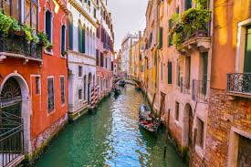
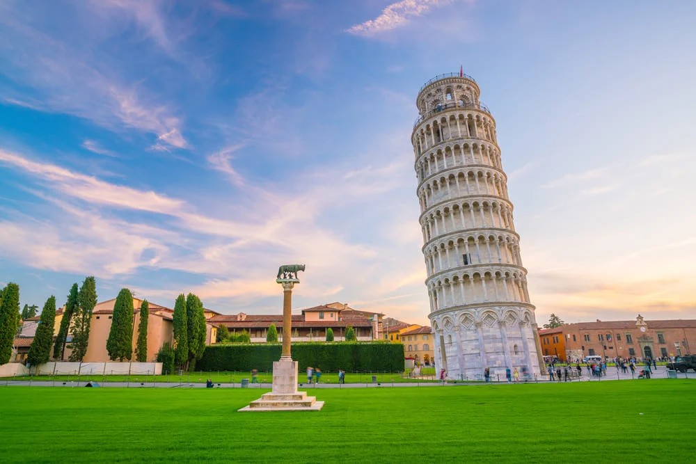
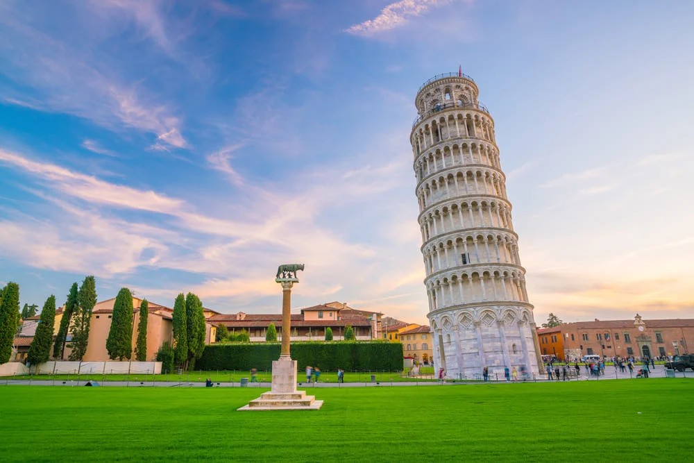
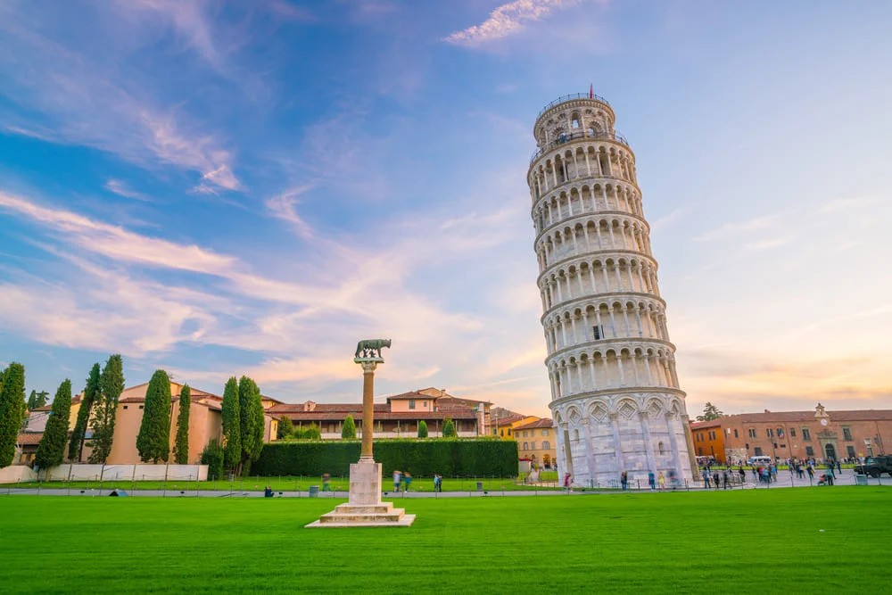
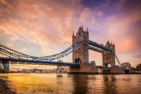
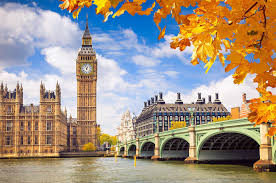
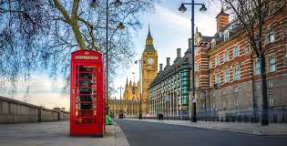
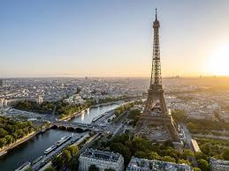
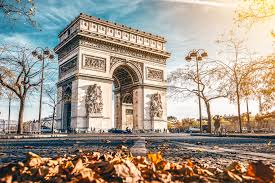
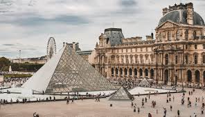

VELHO MUNDO NOVO
Venha visitar lugares históricos que ajudaram a formar o mundo como conhecemos hoje
Na transição da Idade Média para o Renascimento, a Europa experimentou uma fase de profundas transformações, que muitos europeus viam como a criação de um "novo mundo" dentro de seu próprio continente.
Esse período trouxe uma renovação cultural, científica e filosófica que redefiniu o pensamento e as artes.
Lugares que se destacaram no Mundo Novo Europeu
- ITÁLIA
- A Itália foi um dos grandes focos dessa mudança, especialmente em cidades como Florença e Roma, onde o Renascimento artístico floresceu com figuras como Leonardo da Vinci e Michelangelo.
- INGLATERRA
- A Revolução Científica ganhou força em locais como a Inglaterra e os Países Baixos, com nomes como Isaac Newton e René Descartes impulsionando novos conceitos sobre o universo e a natureza.
- FRANÇA
- A França teve um papel de destaque no desenvolvimento da filosofia, especialmente através do surgimento do ceticismo moderno e da análise crítica da sociedade. Michel de Montaigne, um dos principais pensadores franceses do Renascimento, foi pioneiro na escrita dos Ensaios, onde explorou a dúvida, a natureza humana e a autopercepção.

 







